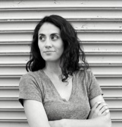

Al Jazeera
53 people whose festival biography mentions Al Jazeera. A mention can mean a job, a past job, a grant, a broadcast or an award: read the bio for which.

 Steve SapienzaPanelist · 4 editions, 2017–2025
Steve SapienzaPanelist · 4 editions, 2017–2025


- Assia BoundaouiPanelist, filmmaker · 2 editions, 2017–2018



Juliana Schatz PrestonPanelist, filmmaker · 2 editions, 2019–2021 Rachel Lauren Mueller · Anne Sundberg · Yoruba RichenFilmmaker, panelist · 2 editions, 2022–2026
Rachel Lauren Mueller · Anne Sundberg · Yoruba RichenFilmmaker, panelist · 2 editions, 2022–2026- Poh Si TengPanelist, workshop leader · 2 editions, 2018–2021
- Serena AjbaniPanelist · 2019
- Anas Aremeyaw AnasPanelist · 2017
 Maggie BowmanPanelist · 2021
Maggie BowmanPanelist · 2021- Sabrina BuchwalterPanelist · 2015
 Andreas DalsgaardFilmmaker, panelist · 2026
Andreas DalsgaardFilmmaker, panelist · 2026- Andrew FeinsteinPanelist · 2015
 Alexandra GenovaFilmmaker · 2026
Alexandra GenovaFilmmaker · 2026 Roopa GogineniFilmmaker, panelist · 2023
Roopa GogineniFilmmaker, panelist · 2023- Sally HaydenPanelist · 2019
 Shawn HazelettFilmmaker, panelist · 2023
Shawn HazelettFilmmaker, panelist · 2023- Brent HuffmanFilmmaker · 2022


 Darya MarchenkovaPanelist · 2021
Darya MarchenkovaPanelist · 2021 Evan MascagniPanelist · 2023
Evan MascagniPanelist · 2023 Merete MuellerFilmmaker · 2022
Merete MuellerFilmmaker · 2022- Tom MuellerModerator · 2019
 Lizzie MulveyFilmmaker · 2021
Lizzie MulveyFilmmaker · 2021- Thor NeureiterPanelist · 2015
 Sinéad O’SheaFilmmaker · 2022
Sinéad O’SheaFilmmaker · 2022- Connie PendletonPanelist · 2018
 Nicole SalazarPanelist · 2021
Nicole SalazarPanelist · 2021- Andalusia Knoll SoloffFilmmaker, panelist · 2019